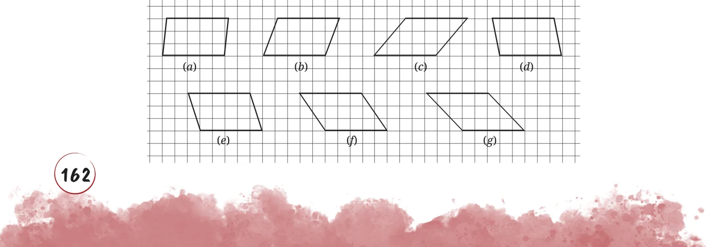
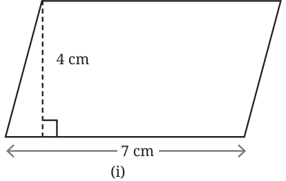
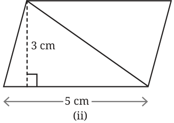
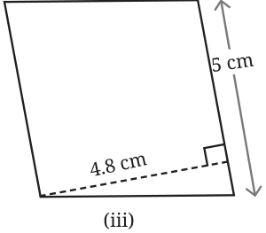
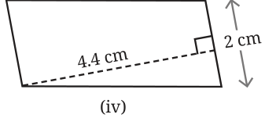
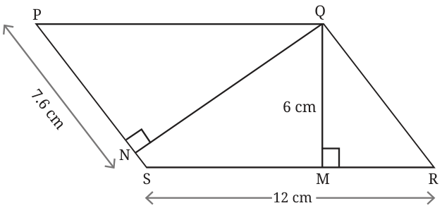
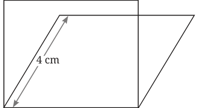
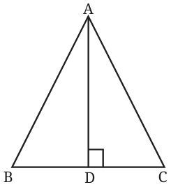

- 1.Observe the parallelograms in the figure below.
- (i)What can we say about the areas of all these parallelograms?
- (ii)What can we say about their perimeters? Which figure appears
to have the maximum perimeter, and which has the minimum perimeter?


- 2.Find the areas of the following parallelograms:




- 3.Find QN.

- 4.Consider a rectangle and a parallelogram of the same sidelengths: 5 cm
and 4 cm. Which has the greater area? [Hint: Imagine constructing them on the same base.]

- 5.Give a method to obtain a rectangle whose area is twice that of a
given triangle. What are the different methods that you can think of?

- 6.[Śulba-Sūtras] Give a method to obtain a rectangle of the same area
as a given triangle.
- 7.[Śulba-Sūtras] An isosceles triangle can be converted into a rectangle
by dissection in a simpler way. Can you find out how to do it?

[Hint: Show that triangles \(\triangle ADB\) and \(\triangle ADC\) can be made into halves of a rectangle. Figure out how they should be assembled to get a rectangle. Use cut-outs if necessary.]
- 8.[Śulba-Sūtras] Give a method to convert a rectangle into an isosceles
triangle by dissection.
- 9.Which has greater area - an equilateral triangle or a square of
the same sidelength as the triangle? Which has greater area - two identical equilateral triangles together or a square of the same sidelength as the triangle? Give reasons.